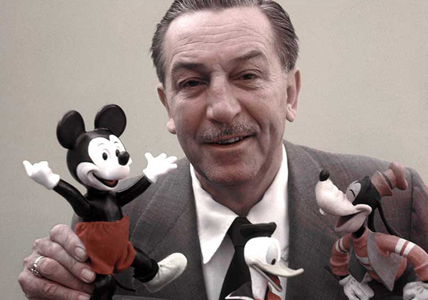

Walt Disney
«No duermas para descansar, duerme para soñar. Porque los sueños están para cumplirse»
Natalia Belén Perulán
Nació el 5 de diciembre del año 1901 en Chicago, Estados Unidos. Al cumplir 5 años, su familia se mudó a la granja que su hermano Roy en Missouri, y allí desarrolló su amor por el dibujo. Al cumplir los dieciséis años abandonó los estudios con la esperanza de meterse al ejército para luchar durante la primera guerra mundial, fue rechazado por ser menor de edad.
COMIENZOS
EN LA
ANIMACIÓN
El año 1923 comenzó a producir dibujos animados en Hollywood con su hermano Roy Disney; en 1927, realizó una serie de dibujos para Universal Pictures. En Steamboat Willie hizo por primera vez su aparición Mickey Mouse. Este corto también significó el inicio del cine sonoro en los dibujos animados.
Piensa, cree, sueña y atrevéte.
WALT DISNEY
Piensa, cree, sueña y atrevéte.
AUTOR
En 1928 estrenó otro corto animado donde Mickey Mouse era presentado al público como personaje principal. Ya había conseguido introducir el sonido en el mundo de los dibujos, y logoro consiguir que tuvieran color. Creó asi la primera película de dibujos animados de la historia: Blancanieves y los siete enanitos. Su productora Walt Disney Productions se convirtió en la productora más prestigiosa y famosa, comenzaron a publicar libros y cómics con sus personajes más famosos. El 15 de diciembre de 1966 su salud flaqueaba, y todo su imperio entró en una lucha por la sucesión. Fumador empedernido y aficionado al alcohol, murió en Los Ángeles, California, víctima de un cáncer de pulmón.
LA LOCURA
DE DISNEY
Aunque los ingresos del estudio eran muy considerables, no eran todavía suficientes para Disney, quien en 1934 empezó a planear la producción de un largometraje. Cuando en la industria de la animación se supo que Disney planeaba la producción de un largometraje animado sobre Blancanieves, se bautizó al proyecto como «la locura de Disney», y todo el mundo estuvo de acuerdo en que el proyecto terminaría arruinando al estudio.